A fall bedroom refresh doesn't have to start with paint or a lighting overhaul.
Most of the seasonal feeling actually comes from a handful of physical items, the things touched, wrapped up in, and smelled before falling asleep.
This is a checklist of what to actually own for the season, not a list of design moves to make.


Cozy Season Starts With What You Touch
A room can look like fall and still not feel like it if the actual textiles, the blanket, the sheets, the rug underfoot, stay the same as every other season.
These items do more for the day-to-day feeling of the room than anything purely visual.
1. The Small Extras That Add Up
A warm throw blanket draped over a reading chair, a small basket for extra pillows, a seasonal hand cream on the nightstand, the smaller details round out the checklist without needing much additional effort.
None of these are essential on their own, but together they're what makes a room feel fully considered rather than half-finished.
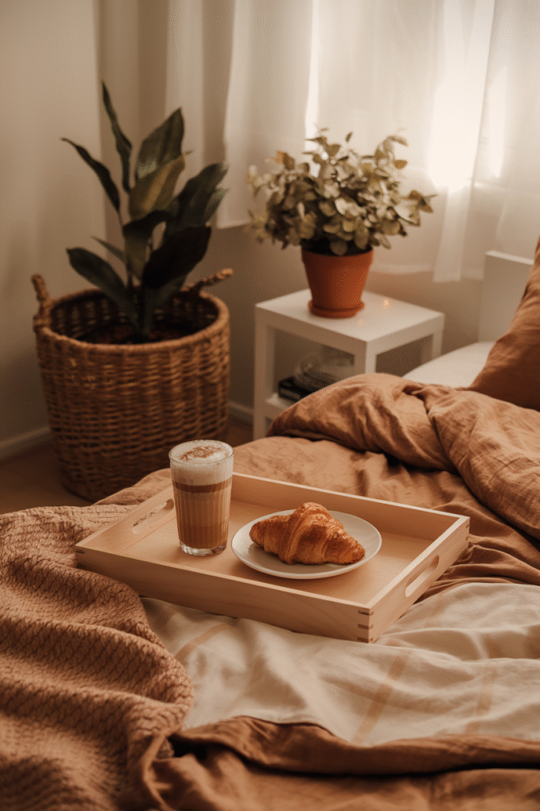
2. A Textile Color Palette, Not a Wall Color
Rust, deep green, warm plaid, and cream don't need to go on the walls at all, applied through throws, pillows, and the rug, they carry the seasonal palette just as effectively.
This is a lower-commitment way to shift the room's color story than repainting, and it reverses just as easily once the season changes.
Keeping two or three colors consistent across all the textiles ties everything together.
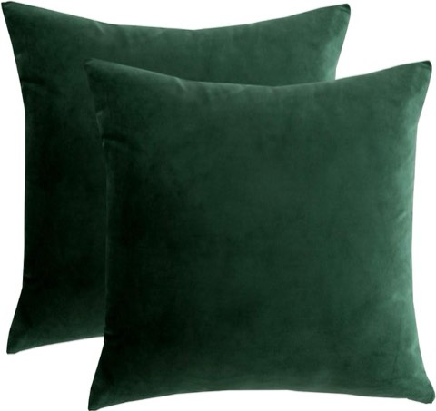
RainRoad Dark Green Velvet Decorative Throw Pillow Covers, 18 x 18 Inch, Set of 2
Shop on Amazon
3. Sleepwear That Actually Matches the Temperature
A flannel or brushed-cotton pajama set matters more for fall comfort than most people account for when planning a seasonal refresh.
This is easy to overlook since it's not visible decor, but it directly affects how comfortable the room feels to actually sleep in.
Worth having on hand before the first genuinely cold night, not after.
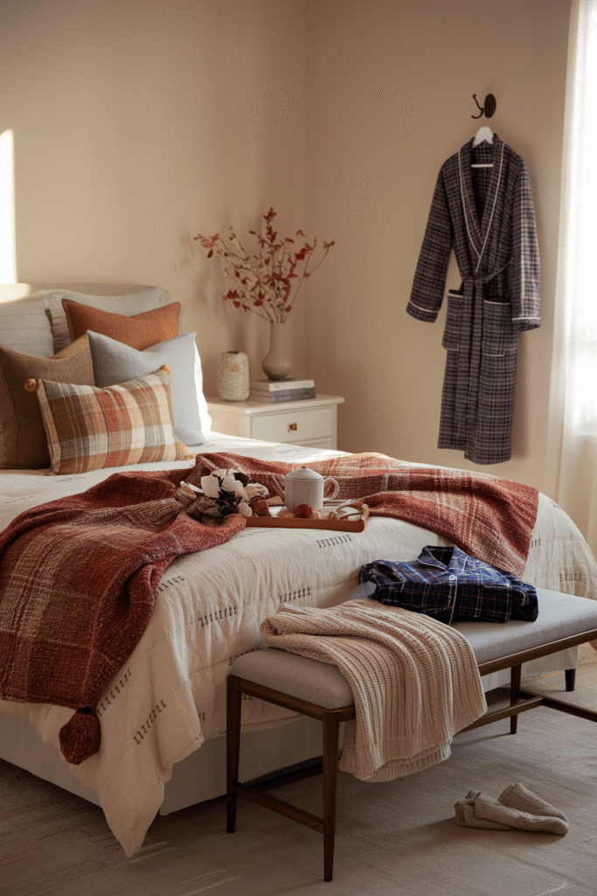
4. One Piece of Seasonal Wall Accent
A single warm-toned print or a small textured hanging adds a seasonal note to the wall without a full redecorate.
This works best as one considered piece rather than several competing accents, especially in a room already carrying color through its textiles.

5. A Seasonal Scent
A candle or diffuser in a warm, spiced scent does as much for the room's fall feeling as any visible decor change.
This is one of the fastest, cheapest items to swap seasonally, and one of the easiest to change back when the season ends.
A scent kept consistent through the season tends to become genuinely associated with the feeling of fall over time.
Aromatique Pumpkin Spice Reed Diffuser Set, Maple, Cinnamon and Clove
Shop on Amazon6. A Rug That Keeps Feet Warm
Cold floors are one of the most-overlooked parts of a fall bedroom, a soft rug by the bed solves it directly, every single morning.
A natural wool or shag rug holds warmth better underfoot than a thin or synthetic one.
This is a genuinely functional addition, not just a styling one.
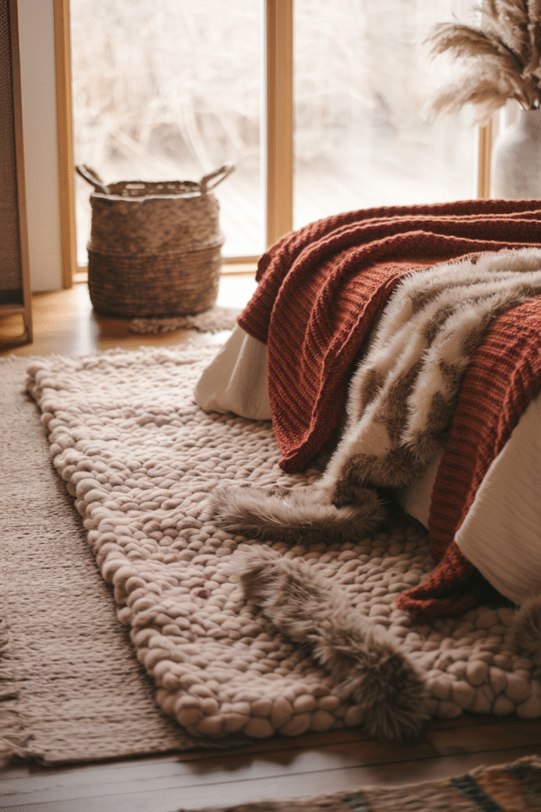

7. A Properly Layered Bed
A flat sheet, a warmer duvet, and a throw on top, real layering, not just a single heavier comforter, lets the bed adjust to temperature swings through the night.
This is worth doing properly rather than just swapping in one heavier blanket, since fall nights vary more in temperature than deep winter ones do.
A flannel or brushed-cotton sheet set underneath makes a bigger difference here than most people expect.
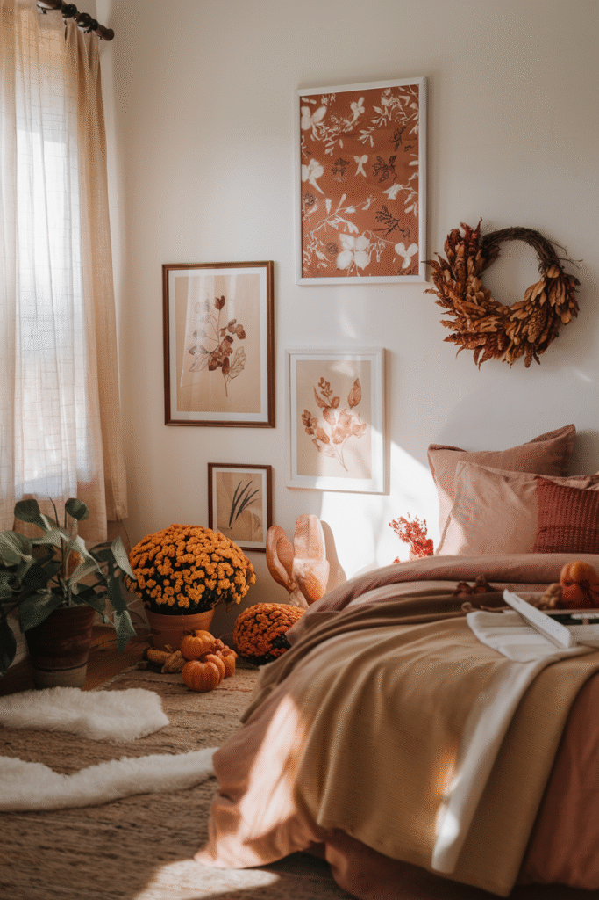
8. Warm-Toned Lighting
A warm bulb swap in the existing bedside lamp changes the whole room's evening mood for the cost of a single lightbulb.
A string of warm fairy lights or a small plug-in lantern adds a second, softer light source for evenings that call for less than the main overhead light.
This matters more as days shorten heading into fall, when evening lighting gets used far more than it did in summer.
Amazon Essentials Women's Flannel Button Front Long-Sleeve Pajama Set
Shop on AmazonSWOMOG 100% Cotton Women's Button Down Pajama Set, Long Sleeve
Shop on Amazon9. Pillows That Pull Double Duty
A couple of seasonal pillow covers, rust, deep green, warm plaid, swap in and out without needing new pillow inserts each time.
This is one of the cheapest, lowest-commitment items on this list, since covers alone handle most of the seasonal color shift.
Mixing textures, a velvet cover next to a knit one, adds more visual interest than color alone.
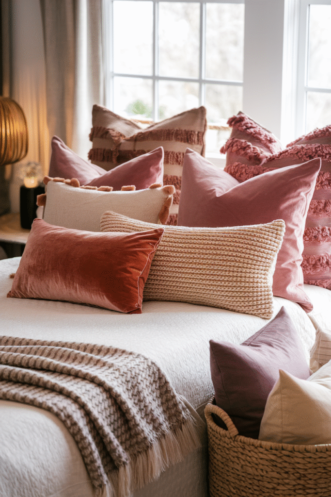
Artfeel Woven Blanket Basket, Rectangle Storage Basket, 65L
Shop on AmazonYoken 20% Shea Butter Hand Cream Gift Set, 6 x 1 oz Travel Size
Shop on Amazon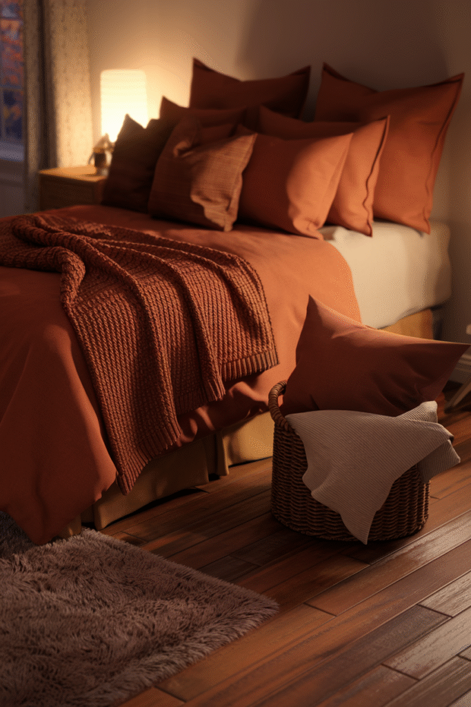
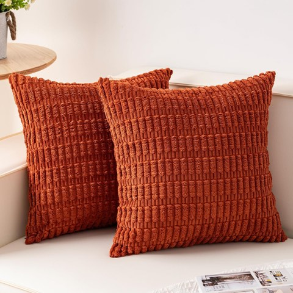
Aegero Corduroy Decorative Throw Pillow Covers, 18 x 18 Inch, Rust, 2 Pack
Shop on Amazon10. A Throw That Actually Gets Used
A chunky knit or sherpa throw at the foot of the bed should be functional, not just decorative, the best ones get pulled onto the couch and back nightly.
Two different weights, a lighter one for early fall and a heavier one for the colder stretch, cover the whole season without buying twice.
This is one of the highest-use items on this entire checklist relative to its cost.
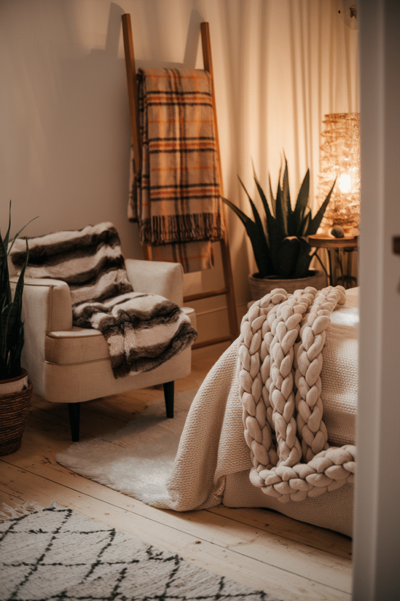
Soft Chunky Knit Throw Blanket for Couch, Cozy Warm Knitted Blanket
Shop on Amazon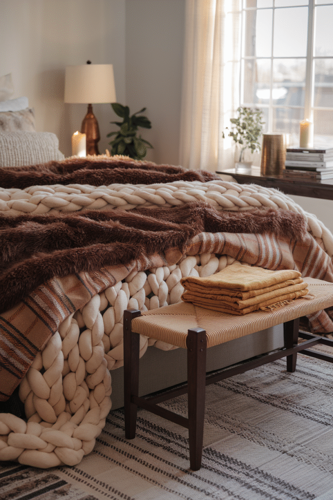

Final Thoughts
None of these 10 items need to be bought all at once.
Start with the throw and the pillow covers, since they're the cheapest and most immediately noticeable, then build out the rest of the checklist over time.
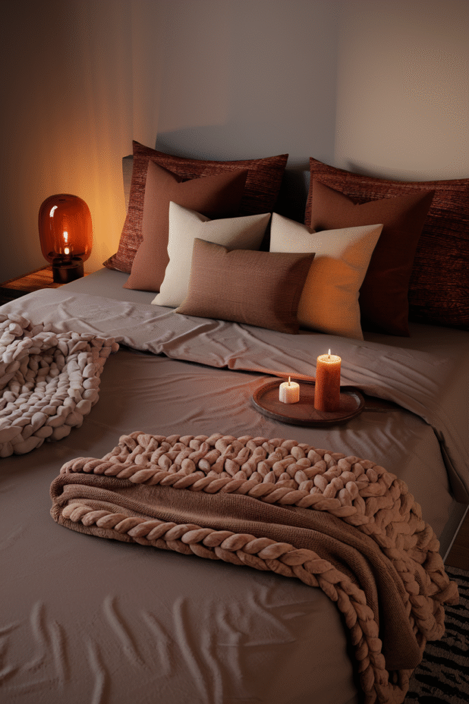
A fall bedroom comes down to what's actually touched and used every day. Get those few things right, and the rest follows.
Everything on this list keeps working for next year too, so none of it counts as a one-season purchase.